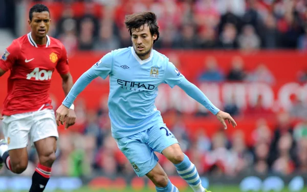

David Josué Jiménez Silva is a Spanish professional footballer who plays for La Liga club Real Sociedad. Silva plays mainly as a central or an attacking midfielder but can also play as a winger or second striker.
Born: 8 January 1986 (age 35 years), Arguineguín, Spain
Height: 1.73 m
Partner: Yessica Suárez González
Current team: Real Sociedad (#21 / Midfielder)
Salary: 67.6 lakhs GBP (2012)
Children: Mateo Silva
Nicknames: El Mago, Merlin